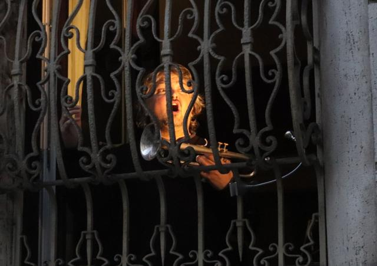

[四十日谈] 秋凉的米兰封城日记-01
原文链接 备份链接 编者荐语： 就像是武汉封城之后，许多网友开始制作自己的视频日记，这让世界了解了武汉的人们的日常与他们面对疫情的许多情绪。四十日谈也正在创建一个平台，用影像使不同国家的人们看到在意大利的人们的状态。秋凉从封城的第0天开始 …
体坛周报全媒体驻意大利记者 陈硕麟
疫情步步紧逼，意大利人则在用乐天的态度互相打气。
意大利政府要求居民在非必要情况下不得出门，且在出门时需随身携带一份自证表格，以便在接受查问的时候解释原因，这足以让大部分人老老实实呆在家中。
如何在自我隔离时排解压抑和恐慌？意大利人给出的答案是唱歌，在阳台和窗口，人们和邻居对歌，和对面的楼房对歌，和整个居民区对歌，有设备的出设备，没设备的只需有一副嗓子。一座座封闭城市中的孤岛被歌声串联，又集结成片，再勾勒出一个亚平宁半岛。


在博洛尼亚，居民在阳台上高唱《Bella Ciao》，这首二战时期的意大利游击队歌曲，其旋律随着《啊朋友再见》流传于世；在米兰，上世纪70年代著名歌唱家吉米·丰塔纳的《世界》引发全楼合唱；这种对唱也跨越了物理距离，网络上，民众各自上传了一段阿德里亚诺·切伦塔诺《蔚蓝》的唱段，凑成了一首完整歌曲。当然，和邻居对唱的时候请小心飞沫传播…
意大利国歌《马梅利之歌》亦是热门曲目，这首歌有173年历史，意大利第一次独立战争前夕，爱国青年郭弗雷多·马梅利写出词，再由米凯莱·纳瓦罗谱曲，意大利历经三次独立战争走向统一国家之路，《马梅利之歌》的旋律响彻其间。这首歌的歌词具有强烈的忧患意识，在对抗新冠病毒这一场特殊的战争里，仍要靠它鼓舞人心。
今天傍晚的罗马则为中国准备了特别的礼物，在一处住宅区，居民在楼顶用音响播放《义勇军进行曲》，并在旋律结束后高喊：“感谢中国。”
来自四川的专家团已经带着大量援助物资抵达了罗马，在未来，还会有更多来自中国的专家团队到达意大利进行支援，对于被第一波疫情爆发消耗了大量医疗资源，且众多医护人员被感染的意大利而言，无疑是雪中送炭。意大利人纷纷在社交媒体上感谢中国的支援，尤其是欧盟面对意大利疫情不作为的当下，这些援助的意义更非比寻常。
我们所在的居民楼，住户以老人居多，疫情开始之后，有些人被儿女接去一起住，还有一些租客则暂时离开回了老家。虽然老楼房的隔音一般，但现在也只是偶尔能听到些响动，无非是对门大叔呵斥家里养的10岁老猫，又或者住在楼上的一位Lucia起床收拾，关门，以及随后一连串高跟鞋踩在台阶上的敲击声。
我们至今不知道她做什么职业，只知道每天早晨天色未亮，她的闹钟就会响，然后在下午，她会独自回到住处，每天如此，哪怕在疫情期间。而我们最近则发现，她每天出入，一直没有口罩。
之前去药店买消毒水的时候，我曾想顺带再多买些口罩储备，但医师带着一种对无产阶级的怜悯告诉我，一个口罩卖14欧。因此对于之前没有提前准备好的人来说，口罩现在是完完全全的奢侈品，一些人不是不想戴，而是戴不起。
鉴于我们之前还存了一些口罩，如今在封锁令之下也几乎没有什么出门机会，今天午饭之后，我们将几个口罩放在密封袋里，挂在门把手上，留了张纸条，告诉其他居民，有需要的可以自取。傍晚，高跟鞋的敲击声来到我们门口时停顿了一会，晚上我们再打开门，发现地毯上放着盒红茶，来自Lucia。

“亲爱的邻居，袋子里有一些干净的口罩。如果你们有需要就拿去用吧。我们希望能尽快度过这一切。”

“感谢你们的热心肠！！——Lucia”
原文链接 备份链接 编者荐语： 就像是武汉封城之后，许多网友开始制作自己的视频日记，这让世界了解了武汉的人们的日常与他们面对疫情的许多情绪。四十日谈也正在创建一个平台，用影像使不同国家的人们看到在意大利的人们的状态。秋凉从封城的第0天开始 …
原文链接 备份链接 *************▲*************春天来了，学校门前的路却空空荡荡。 （沉白白/图） 全文共4034字，阅读大约需要7分钟。 威尼托大区本周关闭了学校，却没有要求大家在家隔离。看着窗外三三两两去踢 …
原文链接 备份链接 “Dio ha scelto di stare dalla nostra parte.” ********************** 在2月21日之前，意大利新冠肺炎确诊病例仅有3例。然而截至当地时间3月10日，意大 …
原文链接 备份链接 作为一个科学大国，英国是如何应对新冠疫情的？他们是否能走出一条和中国不同、社会成本更低而行之有效的防疫之路？为此我们采访了流行病学专家、牛津大学终身教授陈铮鸣。 英国于 1 月底确诊第一位来自中国的输入性新冠患者。截 …
原文链接 备份链接 据最新数据，意大利确诊新冠病例数已超过7000，累计死亡366例，是除中国之外，全球疫情最严重的国家。 在意大利的华侨人数众多。武汉疫情起来时，他们积极捐款捐物，把当地能买到的口罩一扫而空。 意大利医疗系统对新冠 …